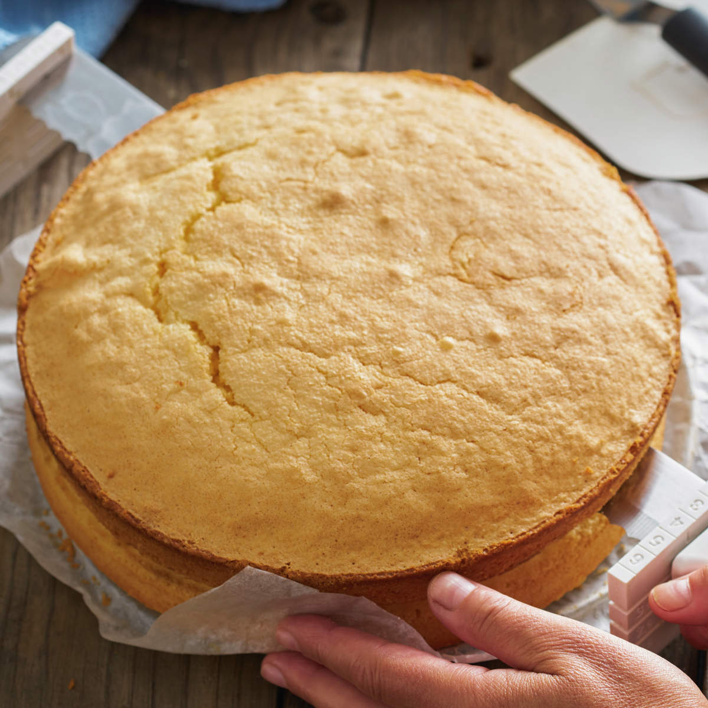

Mejores Valorados
Descubre las mejores valoraciones de la semana

Pollo Agridulce

Pan con tomate, jamón y aceite

Bizcocho de capuchino

Tostadas Francesas

Bollitos Chinos
Tamagoyaki

Arepa

Paella

Lasaña

Coq au vin

ramen

Criollo Venezolano

Churros con chocolate

Cannoli

Crepas dulces

Galletas de sésamo
Dorayaki

Golfeados

Tortilla de patatas

Pizza margarita

Quiche Lorraine

Fideos salteados

Sushi